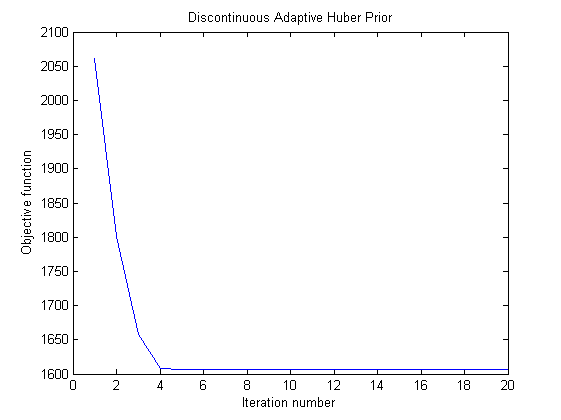

CS 736 : Assignment 3: Question 2: (Reconstructing a Magnetic Resonance Image of the Brain)
Praveen Agrawal 12D020030
Aditya Kumar Akash 120050046
Contents
Part A
Loading the images
load('../Data/assignmentImageReconstructionBrain.mat'); %imageNoiseless = imageNoiseless(100:150, 100:150); %imageNoisy = imageNoisy(100:150, 100:150); imageNoisy = ifft2(imageKspaceData); Y = imageKspaceData; S = imageKspaceMask; Y = S.*Y; std_dev = estimateNoise(imageNoisy); % parameters alpha = 0.08; gamma = 0.01; epsilonThreshold = 0.01; epsilon = 0.0000001; gradThreshold = 0.00001; % minVal = Inf; % minAlpha = 0; % minGamma = 0; fxValues = zeros(3, 100, 1); iterValues = zeros(3, 1); denoisedImages = zeros(3, size(imageNoisy, 1), size(imageNoisy, 2)); for prior = 1:3 % selecting the optimal parameters if prior == 1 alpha = 0.99979; gamma = 0; % not relevant elseif prior == 2 alpha = 0.99981; gamma = 0.07; else alpha = 0.99999; gamma = 0.04; end % for alpha = linspace(0.1,0.9,9) % for gamma = linspace(0.14, 0.19, 6) % find the derivative w.r.t prior and the penalty w.r.t potential if prior == 1 % quadratic prior h = @(x) quadFunctionH(x); g = @(x) quadFunctionG(x); elseif prior == 2 % discontinuous adaptive huber prior h = @(x) huberFunctionH(x, gamma); g = @(x) huberFunctionG(x, gamma); else % discontinuoue adaptive proir h = @(x) discontAdapFunctionH(x, gamma); g = @(x) discontAdapFunctionG(x, gamma); end % Gradient Descent to optimize the values X = imageNoisy; % initial guess prevX = imageNoisy; % holds previous solution tau = 0.1; prevFx = alpha * priorPotential(X, imageNoisy, g); iteration = 1; fxValues(prior, iteration) = prevFx; while tau > epsilon && iteration < 50 % main loop % calculating the likelihood part of X likelihoodX = Y - S.*fft2(prevX); priorDerivative = priorGradient(X, imageNoisy, h); likelihoodDerivative = ifft2(S.*fft2(prevX)) - imageNoisy; dX = (1-alpha) * 2 * likelihoodDerivative + alpha * priorDerivative; if sum(sum(abs(dX))) < gradThreshold break end X = prevX - tau * dX; priorV = priorPotential(X, imageNoisy, g); likelihoodX = Y - S.*fft2(X); fx = alpha * priorV + (1-alpha) * sum(sum(abs(likelihoodX).^2)); % selecting required value of tau while fx > prevFx && tau > epsilon X = prevX - tau * dX; priorV = priorPotential(X, imageNoisy, g); likelihoodX = Y - S.*fft2(X); fx = alpha * priorV + (1-alpha) * sum(sum(abs(likelihoodX).^2)); tau = tau * 0.5; end if fx <= prevFx prevX = X; prevFx = fx; iteration = iteration + 1; fxValues(prior, iteration) = fx; tau = tau * 1.1; end end X = prevX; iterValues(prior) = iteration; denoisedImages(prior,:,:) = X; %figure; %imshow(abs(X)); end %end % part A % The initial RRMSE disp('Noise Level'); disp(std_dev);
Noise Level
0.0361
part B
figure; imshow(abs(imageNoisy)); title ('Noisy Image'); X(:,:) = denoisedImages(1,:,:); figure; imshow(abs(X)); title ('Quadratic Function Image'); X(:,:) = denoisedImages(2,:,:); figure; imshow(abs(X)); title ('Huber function Image'); X(:,:) = denoisedImages(3,:,:); figure; imshow(abs(X)); title ('Discontinuous Adaptive Image');
part C
for prior = 1:3 figure; plot(fxValues(prior, 1:iterValues(prior))); if prior == 1 title('Quadratic Prior'); elseif prior == 2 title('Discontinuous Adaptive Huber Prior'); else title('Discontinuous Adaptive Prior'); end xlabel('Iteration number'); ylabel('Objective function'); end